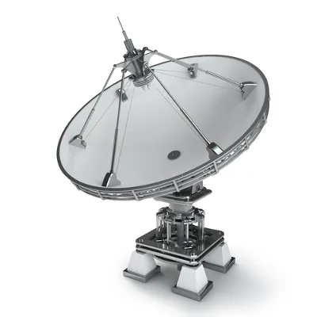

O eletromagnetismo é a parte da Física que estuda a eletricidade e o magnetismo, bem como as relações estabelecidas entre eles.

Eletromagnetismo é a parte da Física que
relaciona a eletricidade e o magnetismo. Essa
teoria baseia-se nos seguintes princípios:
1. Cargas elétricas em movimento geram campo magnético;
2. Variação de fluxo magnético produz campo elétrico.
Durante muito tempo, acreditou-se que eletricidade e magnetismo eram o mesmo fenômeno. Foi
somente em 1600 que o médico e físico inglês Gilbert escreveu um livro distinguindo as duas
teorias. Apesar dessa diferenciação entre os dois fenômenos, havia fortes indícios de que
existia alguma relação entre eles.
Essa relação foi descoberta pelo dinamarquês Hans Christian Oesterd em 1820, o que só foi
possível graças à invenção dos geradores elétricos, que permitiam a geração
de correntes
elétricas duradouras e estáveis necessárias para o estudo dos fenômenos.
Oersted demonstrou a existência dessa interação a partir de um simples experimento. Ele
colocou uma agulha magnética próxima a um condutor de eletricidade. Para isso, ele utilizou
uma bússola e um fio de platina em um circuito. O fio de platina, ao ser
percorrido pela
corrente elétrica, ficava incandescente, o que garantia uma corrente suficientemente
intensa. Quando o fio era aproximado da bússola, sua agulha magnética sofria deflexão.
O experimento de Oersted mostrava que a corrente elétrica gerava campo magnético. Porém, em 1831, Michael Faraday, na Inglaterra, utilizou um núcleo de ferro e duas bobinas A e B para mostrar que a variação do fluxo magnético também gerava corrente elétrica. Faraday percebeu que, nos momentos em que conectava ou desconectava a bobina A na fonte, passava uma corrente elétrica na bobina B, mas essa corrente aparecia somente nesses instantes.
A partir dessa experiência, ele concluiu que essa corrente elétrica ocorria em virtude da
variação do campo magnético, que aparecia quando a bobina A era ligada e desaparecia quando
essa mesma bobina era desligada. Esse fenômeno ficou conhecido como indução
magnética ou Lei
de Faraday.
Os fenômenos eletromagnéticos foram descritos por um conjunto de leis formulado por
James
Clerck Maxwell, cientista que foi tão importante para o Eletromagnetismo como
Isaac Newton
foi para a Mecânica.
Vários aparelhos indispensáveis atualmente só existem em face da evolução nos estudos sobre o Eletromagnetismo. Entre eles, podemos citar: cartões magnéticos, transformadores de tensão, motores elétricos, antenas de transmissão de dados, forno micro-ondas, entre outros.